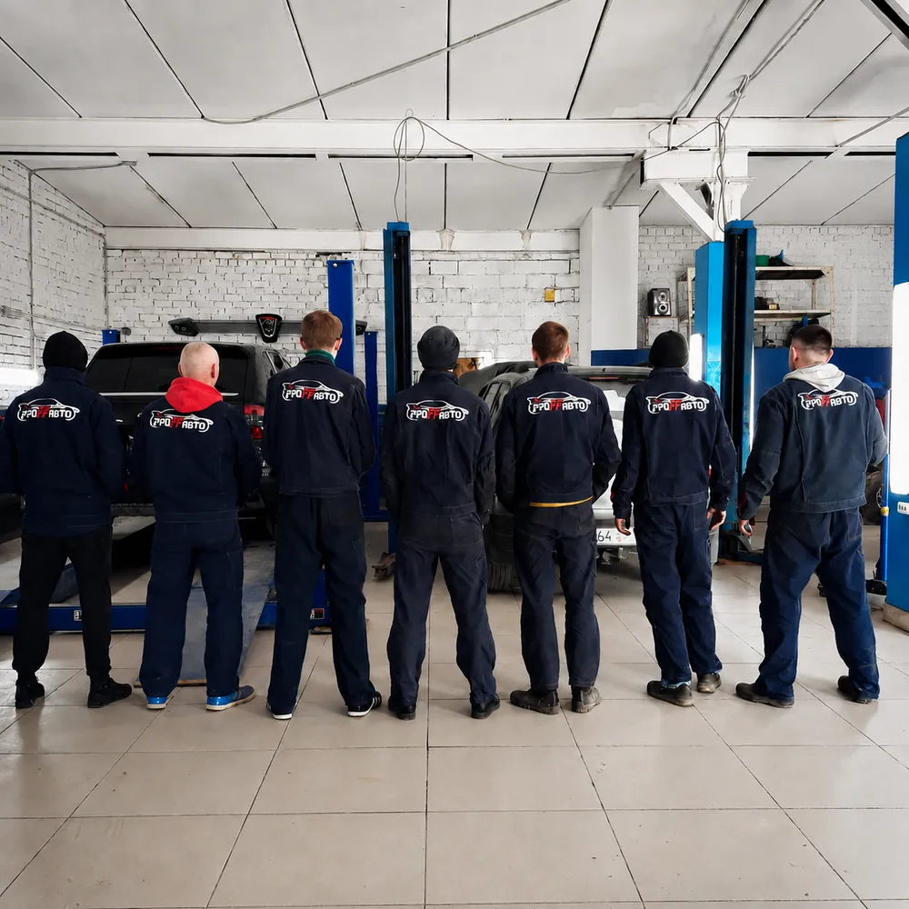

Цена после осмотра
Детейлинг
Химчистка салона, предпродажная подготовка авто, полировка кузова, полировка фар.
Пермь · Закамск · Капитанская, 4В
Что делаем
Работы согласовываются с клиентом до ремонта: мастер объясняет причину неисправности, объем работ и порядок оплаты.
Химчистка салона, предпродажная подготовка авто, полировка кузова, полировка фар.
Проверка узлов, поиск причины неисправности, рекомендации по ремонту и обслуживанию.
Замена масла, фильтров, расходников и плановая подготовка автомобиля к сезону.
Работы с бензиновыми и дизельными двигателями после осмотра и согласования.
Подвеска, рулевое управление, тормозная система и связанные с ними неисправности.
Регулировка геометрии колес после ремонта подвески, замены резины или удара.
Сезонная замена шин, балансировка колес и проверка состояния резины.
Покраска, восстановление геометрии на стапеле, ремонт вмятин, сварка, замена порогов и арок.
Промывка и чистка системы охлаждения, основного/салонного радиатора и печки салона.
Наша команда
В Proffавто работают ответственные мастера с большим практическим опытом. Мы внимательно относимся к каждой машине, объясняем работы понятным языком и делаем ремонт аккуратно, честно и в срок.

Отзывы
116 отзывов
Смотреть Яндекс
142 отзыва
Смотреть 2ГИСПодход
Proffавто делает ставку на понятную диагностику, аккуратное согласование и практичный ремонт. Клиент получает ясный план работ до того, как машина уходит в бокс.
Позвоните и опишите проблему. Мастер подберет удобное время визита.
Автомобиль проверяют, фиксируют причину неисправности и варианты ремонта.
Работы, сроки и детали обсуждаются до старта, без неожиданных добавлений.
После ремонта мастер объясняет, что сделано и на что обратить внимание дальше.
Контакты
Маршрут